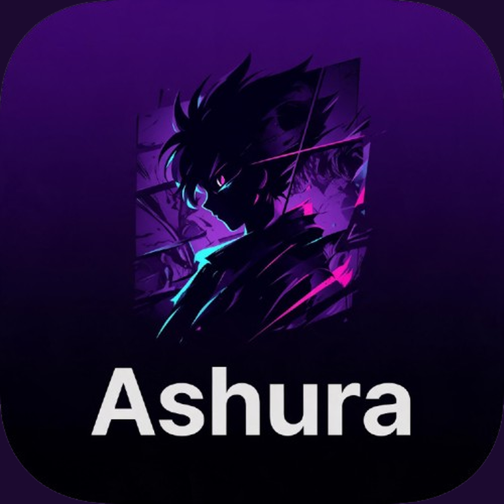

Nightly IPA · AltStore / SideStore
Add this source in AltStore or SideStore to install unsigned nightly builds published from GitHub Releases.
https://remmody.github.io/Ashura/apps.json
Anime catalogs: ashura-anime-sources · Manga catalogs: aidoku-sources